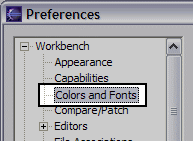
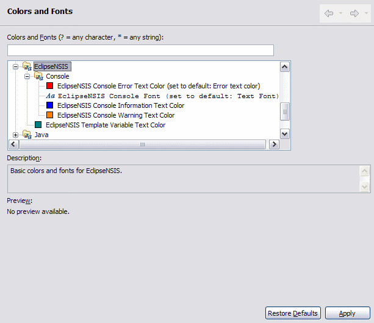

Colors and Fonts
| The Colors and Fonts
preference page is a standard Eclipse Workbench preference page which
can be reached by opening the Window→Preferences menu item and
then navigating to the Workbench→Colors and Fonts item in the
Preferences dialog. Usage of this page is described here. |
 |

- Colors and Fonts
- The following EclipseNSIS colors and fonts preferences can be modified on this page.
- EclipseNSIS Console Error Text Color
- Color used by the EclipseNSIS console to show error messages.
- EclipseNSIS Console Cont
- The EclipseNSIS console text font is used by the EclipseNSIS console.
- EclipseNSIS Console Information Text Color
- Color used by the EclipseNSIS console to show information messages.
- EclipseNSIS Console Warning Text Color
- Color used by the EclipseNSIS console to show warning messages.
- EclipseNSIS Editor Font
- The EclipseNSIS editor text font is used by EclipseNSIS editors.
- EclipseNSIS Template Variable Text Color
- Color used by the EclipseNSIS template preference page previewer and the EclipseNSIS template editor to display template variables.
Previous | Contents | Next
Copyright © 2004, 2005 Sunil Kamath (IcemanK).